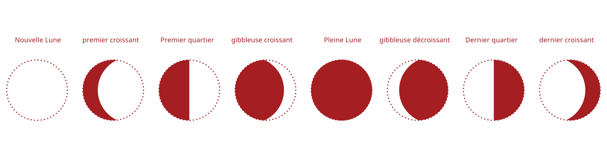
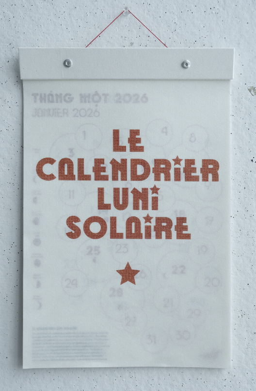

INTERAGIS AVEC L’ANIMATION DU CHEVAL DÉCOUVRE TON ZODIAQUE CHINOIS TÉLÉCHARGE UN CALENDRIER POUR L'IMPRIMER
TÉLÉCHARGE UN CALENDRIER POUR L'IMPRIMER

bye bye
⠀⠀⠀⠀⠀⢠⠀⠀⠀⠀⡀⠀⠀⠀⠀⠀⠀⠀⠀⠀⠀⠀⠀⠀⠀⠀⡰⣧⠀⠀ ⢿⣦⣀⡀⠀⣼⠃⠀⣴⡿⠁⠀⢀⡄⠀⠀⠀⠀⠀⠀⠀⠀⠀⠀⢠⢪⠞⡿⠃⠀ ⠈⠻⢿⣶⣿⠟⠙⠻⣿⣇⣐⣾⡿⠃⠀⠀⢀⠠⠔⠊⠍⠉⠱⢦⣷⠯⡾⠁⠀⠀ ⠀⠀⠀⣿⡟⠀⠀⢠⣿⣯⠟⠋⠠⠀⠐⠈⠀⠀⠀⠀⠀⠀⠀⠘⢘⣿⠃⠀⠀⠀ ⠀⠀⠀⣿⠇⠈⠀⣿⣿⢧⠄⠀⠀⠀⠀⠀⠀⠀⠀⠀⠀⠀⠀⠀⠀⢡⠀⠀⠀⠀ ⠀⠀⠀⣘⠀⣀⣴⣿⡟⠨⠙⢧⡀⠀⠀⠀⠀⠀⠀⠀⠀⠀⠀⠀⠀⠀⡆⠀⠀⠀ ⠀⠀⠀⢿⣿⣿⠟⠉⠀⠀⠀⠆⣺⠙⡆⠀⠀⠀⠀⠀⠀⠀⠀⠀⠀⠀⢃⠀⠀⠀ ⠀⠀⠀⠈⠉⠇⢀⠀⠰⡌⠂⠁⠈⣇⡌⠀⠀⠀⠀⠀⠀⠀⠀⠀⠀⠀⠈⡀⠀⠀ ⠀⠀⠀⠀⢰⡀⠐⡀⢸⡇⠀⠀⠀⡌⡆⠀⠀⠀⠀⠀⠀⠀⡠⠒⠲⣤⠀⢇⠀⠀ ⠀⠀⠀⠀⠀⡧⢔⠈⠸⣥⣖⣔⣄⡟⠃⠀⠀⠀⠀⠀⣠⡊⠀⠀⠀⠘⢤⡘⢥⠀ ⠀⠀⠀⠀⠀⡟⡷⠮⢕⢿⠛⢛⣩⠟⠀⡧⠤⠤⠒⣧⡆⢷⠀⠀⠀⠀⠈⡅⠈⡄ ⠀⠀⠀⠀⠀⠇⠁⡘⠀⠈⠉⠁⢹⠅⢀⠃⠀⠀⠀⡼⠃⡙⠀⠀⠀⠀⠀⠸⠀⢃ ⠀⠀⠀⠀⡸⠀⠰⠁⠀⠀⠀⠀⣬⢀⢸⠀⠀⠀⠰⠁⢠⠁⠀⠀⠀⠀⠀⠀⡇⠈ ⠀⠀⠀⢀⡇⠀⠇⠀⠀⠀⠀⠀⢻⡗⡇⠀⠀⣠⠇⠀⠂⠀⠀⠀⠀⠀⠀⠀⢹⠴ ⠀⠀⠀⢰⠃⢸⠀⠀⠀⠀⠀⠀⠸⠮⠁⢀⢠⣿⣴⠎⠀⠀⠀⠀⠀⠀⠀⠀⠀⠀ ⠀⠀⠀⣸⠀⠀⠀⠀⠀⠀⠀⢐⢇⠃⡾⠀⠀⠀⠀⠀⠀⠀⠀⠀⠀⠀⠀⠀⠀⠀ ⠀⠀⢠⡍⠀⡆⠀⠀⠀⠀⣀⣸⣎⠰⠃⠀⠀⠀⠀⠀⠀⠀⠀⠀⠀⠀⠀⠀⠀⠀ ⠀⠀⢘⡧⠟⠁⠀⠀⠀⠀⠀⠀⠀⠀⠀⠀⠀⠀⠀⠀⠀⠀⠀⠀⠀⠀⠀⠀⠀⠀